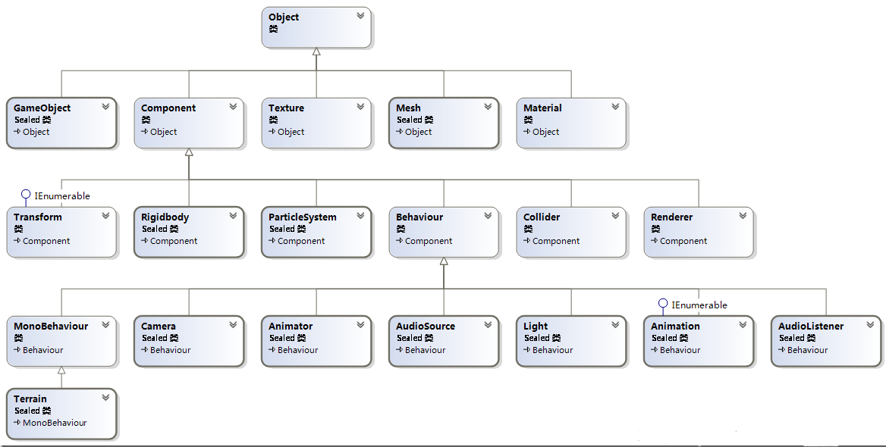

zyque.github.io
Unity 四大类。 
继承关系：Object -> Component -> Behaviour -> MonoBehaviour
因此，脚本具有Component类的所有方法，在写脚本时可以直接用。
Component类提供了查找组件的功能。
继承关系：Object -> Component
当前物体的对象。
可以在组件的引用中直接访问游戏对象的tag。
可以在组件的引用中直接访问游戏对象的transform。是Transform类的对象引用。
返回当前物体中type类型组件的引用，如果没有则返回空。
返回当前物体中所有type类型组件的引用(type类型的数组)，如果没有则返回空。
*要找当前物体所有的组件，可以写GetComponents<Component>()。
返回当前物体及其后代物体中第一个找到的type类型组件的引用(内部使用dfs实现)，如果没有则返回空。
返回当前物体及其后代物体中所有type类型组件的引用(type类型的数组)，如果没有则返回空。
返回当前物体及其先 辈物体中type类型组件的引用，如果没有则返回空。
返回当前物体及其先 辈物体中所有type类型组件的引用(type类型的数组)，如果没有则返回空。
比较当前物体的Tag是否与string相同。
Transform类提供了查找变换组件/改变位置、角度、缩放的功能
继承关系：Object -> Component -> Transform
使用foreach语句可以遍历当前物体所有子物体的变换组件。
当前物体的子物体个数。
物体在世界坐标系的坐标，属于Vector3(三维向量)类。
示例：设置当前物体的坐标为(0, 0, 10)。
transform.position = new Vector3(0, 0, 10);
以下几个Vector3类型的属性修改方法与此相同。
物体相对于父物体中心点的坐标。在Inspector面板中看到的坐标实质上是localPosition，而非position。
物体在世界坐标系的旋转角度，属于Vector3类。
物体相对于父物体的旋转角度。在Inspector面板中看到的坐标实质上是localRotation，而非rotation。
物体相对于父物体的缩放比例，属于Vector3类。在Inspector面板中看到的坐标实质上是localScale。
物体相对于原模型的缩放比例。只读。
物体向三个方向分别移动指定距离。默认沿自身坐标轴移动，如果沿世界坐标轴移动可以写Translate(float, float, float, Space.World)。
物体沿三个坐标轴分别顺时针旋转指定角度。默认沿自身坐标轴旋转，如果沿世界坐标轴旋转可以写Rotate(float, float, float, Space.World)。
物体绕point点，沿axis轴顺时针旋转angle度。
例如：RotateAround(Vector3.zero, Vector3.up, 1);绕原点沿y轴顺时针旋转1度。
根物体的变换组件。
父物体的变换组件。只读。
设置物体的父物体为指定变换组件的所属物体。worldPositionStays不填则默认为true。如果为true，则物体的position保持不变，localPosition可能会相应地改变，否则物体的localPosition保持不变，position可能改变。
根据名称查找子物体的变换组件。name参数类似路径，比如要找孙子可以写Find("name/name")。(不建议拿来找孙子)
根据索引获取子物体的变换组件。
与所有子物体断绝父子关系。
*如果要和父物体断绝父子关系，使用SetParent(null)。
GameObject类提供了操作游戏对象的功能。
继承关系：Object -> GameObject
物体实际是否激活。
物体自身是否激活。只读。
激活/停用物体。
物体所在的层。
物体的标签。
物体的变换组件。
new 出来一个物体。
给物体添加一个type类型的组件，并返回这个组件。
组件不能new出来，要想创建新组件只能通过这个方法。
示例：创建一个红色点光源物体。
GameObject lightObject = new GameObject();
Light light = lightObject.AddComponent<Light>();
light.color = Color.red;
light.type = LightType.Point;
此方法以及GetComponents<type>()、GetComponentInChildren<type>()等方法和Component类中的方法功能相同。
在所有物体中根据名称查找指定物体。性能消耗很大，不建议使用。
根据标签查找一个带有指定标签的物体。
根据标签查找所有带有指定标签的物体。返回GameObject数组。
对象的名称。
删除指定Object。
在加载新场景时使指定对象不被清除。
在场景中查找一个type类型的对象。
在场景中查找所有type类型的对象，返回type类型的数组。